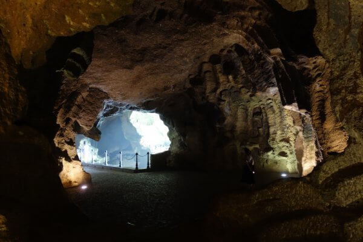

Tanger
Tanger
the Tanger-Med port

Tangier (/tænˈdʒɪər(z)/ tan-JEER(Z); Arabic: طنجة, Berber languages: ⵟⴰⵏⵊⴰ, romanized: Ṭanja, Spanish: Tánger) is a city in northwestern Morocco. It is on the Maghreb coast at the western entrance to the Strait of Gibraltar, where the Mediterranean Sea meets the Atlantic Ocean off Cape Spartel. The town is the capital of the Tanger-Tetouan-Al Hoceima region, as well as the Tangier-Assilah prefecture of Morocco.
Many civilisations and cultures have influenced the history of Tangier, starting from before the 10th century BCE. Between the period of being a strategic Berber town and then a Phoenician trading centre to Morocco's independence era around the 1950s, Tangier was a nexus for many cultures. In 1923, it was considered as having international status by foreign colonial powers and became a destination for many European and American diplomats, spies, bohemians, writers and businessmen.
The city is undergoing rapid development and modernisation. Projects include tourism projects along the bay, a modern business district called Tangier City Centre, an airport terminal, and a football stadium. Tangier's economy is set to benefit greatly from the Tanger-Med port.
Reserve